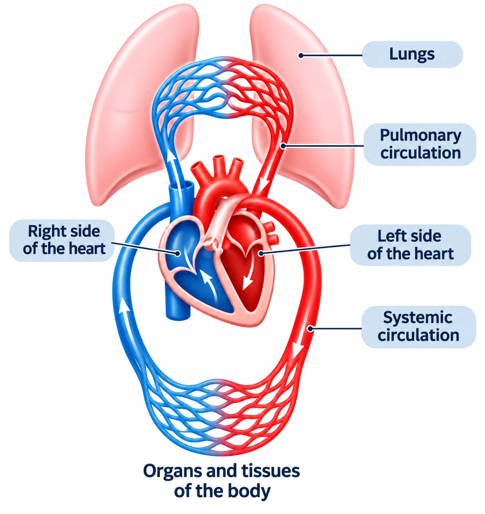
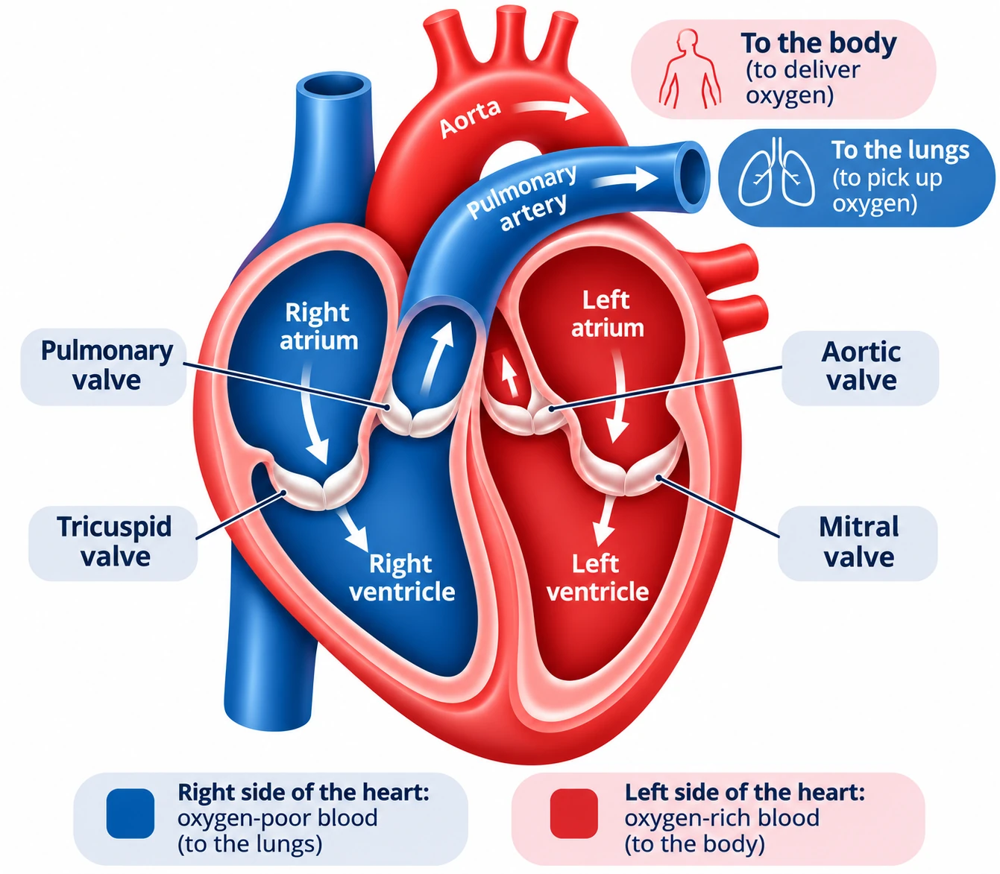
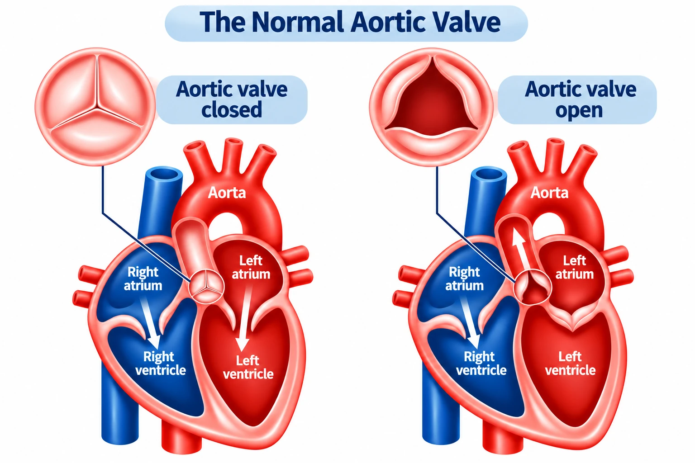
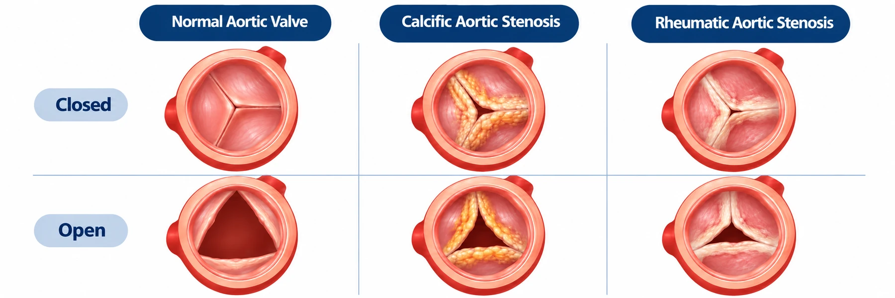
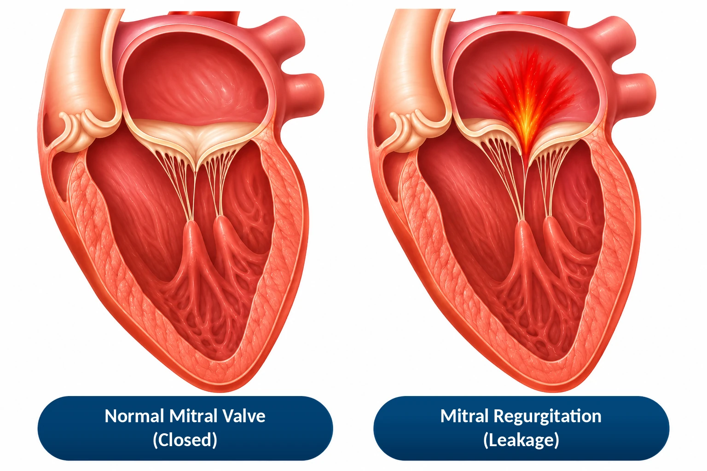
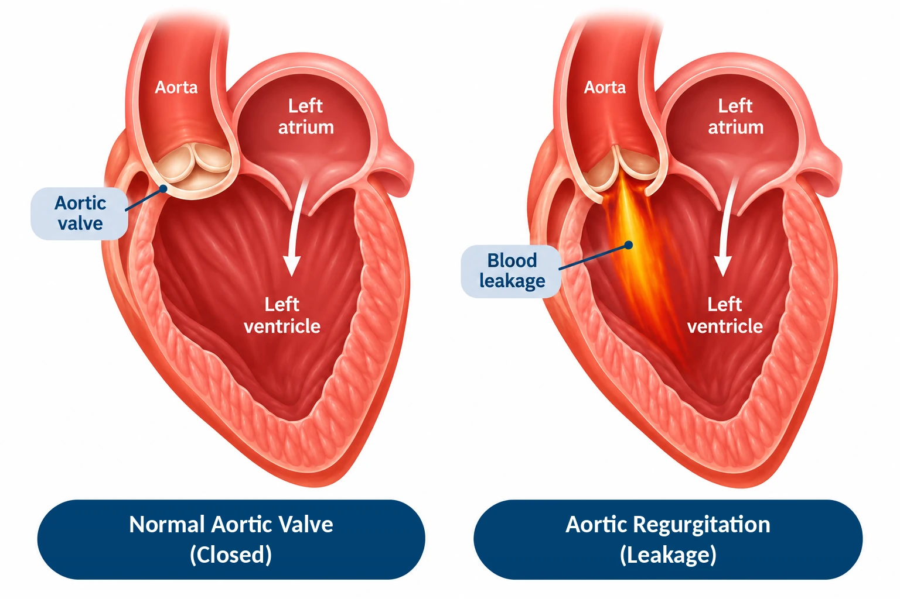
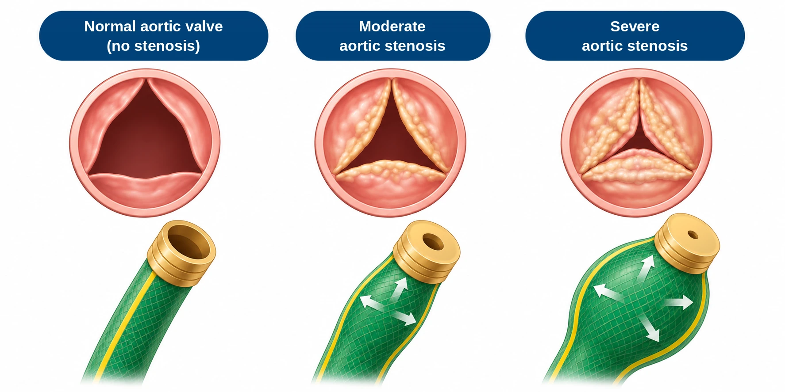
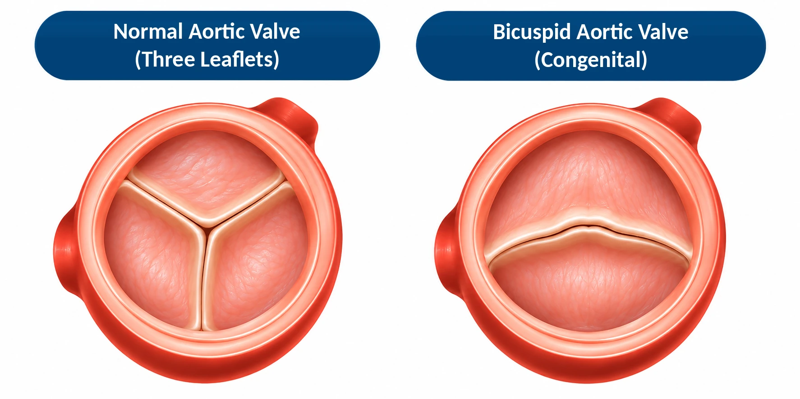

How do the heart valves work?
Our heart is a remarkable pump that moves blood throughout our body, bringing oxygen and nutrients to every one of our organs.
Inside the heart, there are four chambers and four valves.
What is a valve?
A valve is a structure made of small, flexible flaps, called leaflets, that open and close with every heartbeat.
Valves work like one-way doors: they open to let blood through and close to stop it from flowing backward. This keeps blood always moving in the right direction.
The four heart valves
Our heart has two sides: the right heart, which sends blood to the lungs to pick up oxygen, and the left heart, which delivers oxygen-rich blood to the whole body.

Each of these two sides has two valves.
In the right heart:
- the tricuspid valve, which lets blood pass from the right atrium to the right ventricle;
- the pulmonary valve, which lets blood leave the heart for the lungs.
In the left heart:
- the mitral valve, which lets blood pass from the left atrium to the left ventricle;
- the aortic valve, which lets blood leave the heart to be delivered to the whole body.

How do the valves open and close?
Valves do not need muscles to open: they work entirely passively. They open and close naturally because of differences in blood pressure inside the heart.
When a doctor listens to your heart with a stethoscope, the two main sounds they hear, the familiar “lub-dub,” come from your valves closing.

What happens when a valve is diseased?
There are two main types of problems.
Stenosis: a valve that does not open properly
The valve becomes stiffer or thicker (because of fibrosis or calcium), or its leaflets are fused together (rheumatic disease). It no longer opens wide enough: blood has a harder time getting through, and the heart has to work harder to keep blood moving.
It is a bit like trying to push water through a narrowed pipe.

Regurgitation (or valve insufficiency): a valve that does not close properly
The valve no longer closes completely. Some of the blood then flows back in the wrong direction. The heart has to pump more to make up for this leak.
It is a bit like a door that no longer shuts properly.


A single valve can have both problems at once. In addition, more than one valve can be diseased.
How valve diseases affect the way the heart works
When a valve is stenotic, it is harder to open and leaves less room for blood to pass. The heart therefore has to push harder to get blood to the other side of that valve.

Likewise, when a valve leaks, some of the blood flows backward: the heart pumps a volume of blood that “serves no purpose,” since it simply moves from one chamber to the next and then returns to the chamber it came from. For example, with a mitral leak, blood flows from the atrium into the left ventricle, which is normal, and then some of that blood goes back into the left atrium. Once again, part of the heart's work is wasted.
The more severe the valve disease, the greater this extra work. Over the long term, the heart wears out: this is heart failure. That is why it is important to treat valve diseases before reaching that stage.
Why do heart valves become diseased?
Several factors can explain the development of valve disease:
- Aging: over the years, valves can thicken, stiffen and build up calcium.
- A feature present from birth: some people are born with a valve that has a different shape. This is the case with the bicuspid aortic valve, which has two leaflets instead of three.

The normal aortic valve, with three leaflets, and the bicuspid aortic valve, with two leaflets. - Certain heart diseases: when the heart enlarges or changes shape, the valves may no longer close properly, even if they are not directly damaged.
- An infection: some bacteria can infect and damage the valves. This is called endocarditis.
- Certain inflammatory diseases, in particular rheumatic fever, which can leave scars on the valves.
- Certain risk factors, such as age, high blood pressure, diabetes, smoking or high cholesterol, can also promote the development or progression of some valve diseases.
What are the most common valve diseases?
Aortic stenosis
The aortic valve thickens and gradually becomes stiffer, often because of a build-up of calcium and fibrous tissue. It opens less and less well. This disease is particularly common in older people.
Mitral regurgitation
The mitral valve no longer closes properly. Some of the blood flows back into the left atrium, the chamber that receives blood from the lungs. This leak can be caused by a problem with the valve itself or by a change in the shape of the heart.
Tricuspid regurgitation
The tricuspid valve lets blood flow backward in the right side of the heart. When the leak becomes significant, it can cause swelling of the legs or abdomen, among other things.
Aortic regurgitation
The aortic valve no longer closes completely. Some of the blood that has just been pumped out to the body flows back into the heart.
Is it serious?
Yes, but not necessarily right away. Valve disease can be mild, moderate or severe. Some people live for many years with valve disease without feeling any symptoms.
However, valve disease always progresses, more or less quickly. If it is not treated, it eventually leads to heart failure. That is why regular medical follow-up is important, even when you feel well.
Today, there are several management and treatment options suited to each situation.
What can you do?
If you have ever been told that you have a heart murmur, do not let it rest: talk to your doctor about it.
If you are over 60, or if valve disease runs in your family, have your heart listened to with a stethoscope every year.
Key points
- The four heart valves keep blood flowing in the right direction.
- A diseased valve may not open properly (stenosis) or may not close properly (regurgitation).
- Valve disease can be present without causing any symptoms.
- Early diagnosis and appropriate follow-up help protect your heart.
The information presented here is provided for educational purposes and does not replace the advice of a health professional.